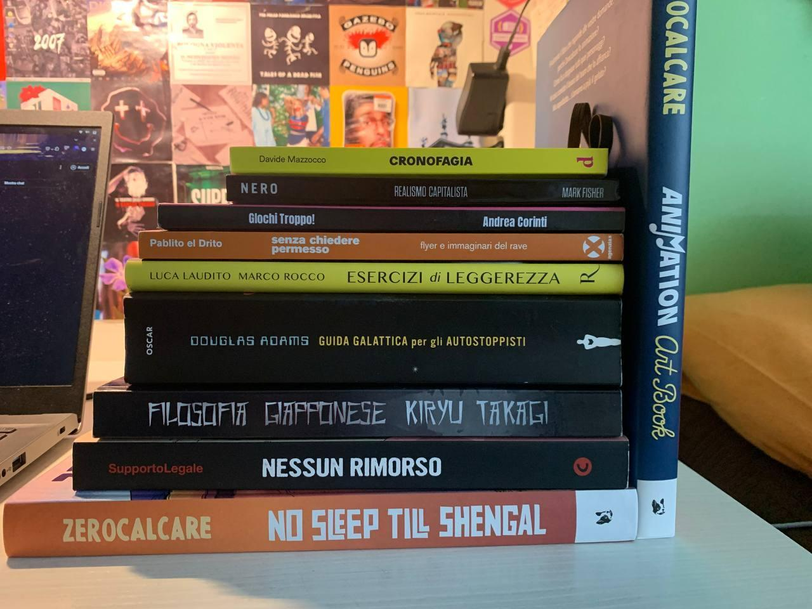

Qualche giorno fa sono incappato nell'articolo del buon Andrea Corinti, conosciuto anche con i nickname di Xab e di “Brava persona che fa cose belle a cui frego ogni tanto qualche idea”… e, come si capisce da queste ultime parole, ho deciso di nuovo di grattare idee dal suo blog per scrivere quest’articolo.
Quindi ecco un mega riassunto di tutto quello che ho visto, letto, giocato e vissuto in questo 2023.
🎬 Film
il 2023 è stato un anno segnato dalla visione di tanti film (sia belli che monnezza pura), però dirò quelli che mi sono rimasti e che più voglio condividere. Partiamo dal presupposto che il primo posto della classifica se la occupa “Oppenheimer”, si sarà scontata come posizione però non ci posso fare niente, per me è un film della madonna e si merita i posti alti tranquillamente.
Stando in territorio nazionale voglio citare “Romantiche”, che pensavo fosse una mezza cagata però alla fine mi sono pure divertito, film da guardare durante le serate chill, “C’è ancora domani”, film bellissimo che invece va recuperato a prescindere, e “Io capitano”, film italiano preferito di quest’anno.
Menzione d’onore ai cortometraggi di Wes Anderson che sono stati messi su Netflix, molto belli e veloci, in un pomeriggio te li guardi tutti. Tra le cose che ho guardato mi sono recuperato “Limitless” e l’ho trovato un gran film (non il migliore dell’anno ma lo trovo un ottimo film) e “Castaway on The Moon”, gran film coreano da recuperare se non l’avete guardato.
Avevo tante aspettative per “Asteroid City” ma se devo essere sincero mi ha abbastanza deluso, non è un brutto film ma ho visto di meglio. L’ultima menzione d’onore sono per i cortometraggi “Food” e “Dimensions of Dialogue” di Jan Švankmajer, due corti ideali per quelle serate mezze creepy dove si guarda roba strana.
📺 Serie TV ( + serie animate)
Tv Time vieni a me!
Prima cosa partiamo da quello che ho guardato sul mio fu account Netflix: Ho finito la terza stagione di “After Life”, Serie molto bella che ho consigliato a tutti i miei amici. Da bravo fanboy di Zerocalcare ho divorato in un pomeriggio “Questo mondo non mi renderà cattivo”, che mi è piaciuto di più della scorsa serie. Ho guadato e adorato sia “Disincanto” che “Scott Pilgrim Takes Off” che ritengo due serie da vedere.
Poi sì ho visto le nuove stagioni di “Love,Death and Robots”, molto carina nonostante alcuni episodi, e “Black Mirror”, tolto l’ultimo episodio che è effettivamente carino il resto è uno schifo totale… “Netflix I want back the time I wasted watching this shit”.
Concludiamo questa parentesi con due serie che ho recuperato, ma che mi hanno fatto abbastanza schifo, ovvero:
- l’ultima stagione di “Sex Education”: Mamma mia… Mamma mia… ma cosa è? Sono uno di quelli che ha adorato le prime stagioni e che non vedeva l’ora di vedere come finiva, ma sta stagione è stata una delusione dopo l’altra e l’ultimo episodio è il finale peggiore che abbia visto di quest’anno
- “Locke & Key”: L’ho cominciata dopo essere stato perseguitato per mesi dai miei amici che mi assillavano nel guardarla… ma che due palle. Carina la prima stagione ma le altre due sono state una tortura cinese. La terza praticamente l’ho guardata a 2x skippando delle scene
Uscendo dall’innominabile N ho recuperato “Euphoria”, che però non mi è piaciuta affatto (l’ho trovata molto noiosa e pretenziosa) e “Blocco 181”, la serie di Sky diretta dal rapper Salmo, che pensavo fosse una mezza cagata ma devo ammettere che alla fine mi è anche piaciuta. Sì non è una serie da incorniciare e da elogiare, però almeno ti tiene compagnia nelle sere di primavera quando non hai voglia di fare niente se non collassare nel divano.
Per il resto ho recuperato le ultime stagioni uscite di:
- “Made in Abyss”: stagione molto bella di un anime vario figo
- “Demon Slayer”: non mi ha fatto impazzire anzi a tratti l’ho trovata noiosa
- “Futurama”: uno schifo totale, potevano anche evitare di fare questa stagione
Penultima roba degna di sto capitolo è l’ultimo episodio di “Attack on Titan” che è stato un susseguirsi di figaggine e di pelle d’oca, una figata.
Ultima roba degna…. un webserie disponibile su YouTube! “Navigavia” La campagna RPG basata su 7th Sea di InnTale è stata la webserie di questo 2023, una sequele di follia, risate, pazzia e serietà. Per me ha superato di gran lunga “Luxastra”, che rimane comunque una grande campagna.
📚 Libri
Avevo fatto un post su PIXEL, dove ho mostrato tutti i libri che ho letto nel 2023, ma, avendo cancellatto il profilo, quello che rimane è questa foto.

🎮 Videogame
È ora di toccare il lato dolente di sto discorso.
Se fino a qualche anno fa passavo i miei anni con l’obbiettivo di giocare a più giochi possibili, ormai sono 2/3 anni che piano piano sto smettendo di fare questa maratona dei più titoli giocati (se mi segui un pò su Livello Segreto forse sai già che a settembre di quest’anno ho scritto un toot dove ho raccontato la scelta di cancellare i miei account Ea, Ubisoft, GoG, Blizard ed Epig Games).
Tra i pochi giochi giocati quest’anno gli unici degni di nota sono “Cult of the Lamb”, che ho adorato dall’inizio alla fine, e “Papers, Please”, che ho recuperato a settembre.
Poi sì ci sarebbe anche “Life is Strange” che però l’avevo giocato già anni fa su Play4 mentre quest’anno l’ho preso anche su Steam
Invece i titoli che ho giocato e che più mi hanno deluso sono 2:
- “Erica”: che si maledetto il giorno in cui ho detto “ma sì platiniamo sto gioco, tanto non dura tanto”… porca merda se mi sbagliavo. Per carità la storia dietro è anche bella, lungi da me dire che la trama faceva cagare, ma il problema era la modalità di gioco. Se vuoi platinare Erica, devi ricominciare il gioco DALLE 4 ALLE 6 VOLTE e te lo devi giocare per tutta l’ora e mezza/l’ora e quaranta che dura senza POTER SALTARE nessuna scena. Ok le prime 2 run, ma dopo no, dopo diventa una tortura cinese sto gioco. Bello eh, ma prossima volta che mi viene in mente un idea del genere prima devo farmi una doccia fredda con fuori 0°
- “A Story About My Uncle”: gioco che ho cominciato qualche settimana fa e messo in pausa dopo un pò. Ho capito che gioco è, capisco perchè può piacere, ma semplicemente non è cazzo mio. Probabilmente un giorno lo riprenderò e lo finisco, ma dubito
🎧 Concerti
Quest’anno ho fatto pochi concerti, purtroppo molti a cui volevo partecipare alla fine no ho potuto per l’effettiva distanza dal dove sono al luogo del concerto, però i pochi che ho fatti sono stati molto significativi per tante ragioni.
Il primo tra tutti è stato il concerto ad Alba, a Collisioni, di Ernia e Lazza, due rapper milanesi. Concerto molto importante perché sono andato a vederlo insieme ad un mio vecchio amico, con cui non ci sentivamo da più o meno 3 anni, ed è stato molto bello riallacciare i rapporti con una persona che non vedevi da tanto e parlare di musica con qualcuno che ha i tuoi stessi gusti.
Per quanto negli ultimi anni mi abbiano fatto cagare, alla fine sono andato a sentire a Torino i Pinguini Tattici Nucleari (band del cuore fino al festival di Sanremo 2020, dopo non commento che è meglio) dove ho assistito ad uno show con contro fiocchi ma che mi ha fatto salire molto la nostalgia e la malinconia (pensare che 4 anni fa, nel 2019, sono andato a sentirli a Carmagnola, dove ho pagato 20€ il biglietto SUL POSTO, e saremmo stati in 2000 sotto il palco a saltare, che ricordi). Super inaspettato il concerto di Biagio Antoniacci, dove ho accompagnato una mia amica. Non ascolto Biagio ma devo ammettere che il concerto è stato molto figo e mi sono pure divertito.
Ultimi 2 concerti, i più importanti, Venerus a Bra e Nitro ad Alba. I miei primi due concerti da solo, dove sono andato in là senza nessuno, completamente di testa mia e con soltanto la voglia di divertirmi saltando in mezzo a sconosciuti. I concerti che più porto dentro di quest’anno.
🎤 Comici
Può sembrare strano, ma in quel di Cuneo esiste un piccolo locale situato all’interno di una vechhia stazione ferroviaria dove, ogni tot viene organizzata una serata particolare, la Cuneo Comedy Night. Dato che ormai son 2 anni che son lì un giovedì sera sì e un giovedì sera no, direi che posso anche mettere questo in questo wrapped.
I comici degni di nota che ho visto dal vivo sono: Xhuliano Dule, Emanuele Tumolo, Alessandro Ciacci, Francesco Fanucchi, i Pota Boyz, Sofia Gottardi e Salvatore Zappia.
Se siete appassionati di Stand Up Comedy e avete la possibilità di andare a vederli dal vivo segnatevi sti nomi e andate a vederli dal vivo, che secondo me rendono molto di più che in video (strano ma vero ma da quando guardo la stand up dal vivo non riesco più a vedere gli spezzoni di comedy central, anzi se li guardo su YT mi annoio fortemente).
Un mese di sfida.. per diminuire lo schifo verso me stesso
Creare un intero podcast artificialmente
📔 Senza Meta